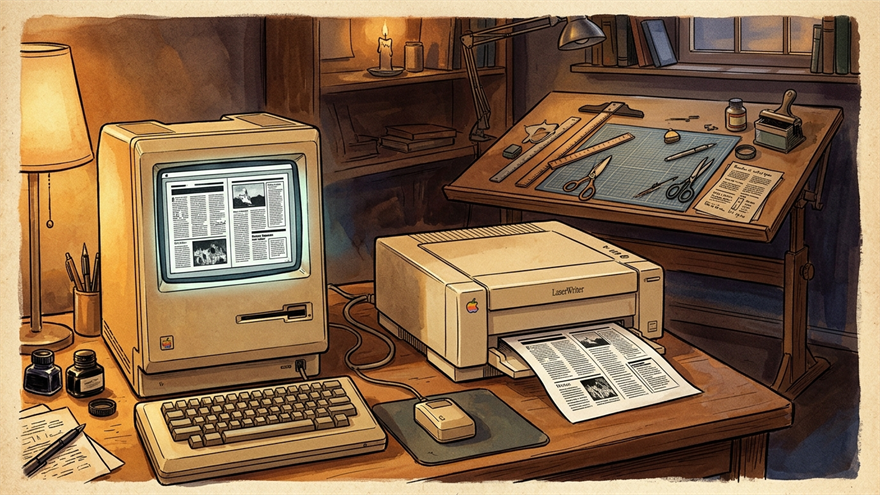

1984
PageMaker, 책상 위에서 잡지를 만드는 시대
“인쇄소에 가지 않고도 우리 책상에서 잡지를 만들 수 있어요!” 카페 메뉴판부터 학교 회보까지, 누구나 출판물을 만들 수 있는 시대가 시작됐어요.

1980년대 초까지 잡지나 책을 만든다는 건 완전히 전문가의 영역이었어요. 내 글이 인쇄물처럼 보이게 하려면 인쇄소에 직접 가서 활자를 손으로 배치하거나, 수천만 원짜리 전문 장비를 써야 했어요. 동네 카페가 메뉴판을 만들거나 학교 동아리가 회보를 만들려면 전문 디자이너에게 큰 비용을 지불해야 했고 결과물을 받기까지 일주일이 걸렸어요.
1984년 매킨토시가 등장하면서 누군가 이렇게 생각했어요. "이 작은 컴퓨터 화면에서 직접 글자와 사진을 배치할 수 있잖아? 그리고 화면에 보이는 그대로 새로 나온 레이저 프린터로 뽑을 수 있다면, 인쇄소 없이도 집에서 잡지를 만들 수 있는 거 아닌가?"
그렇게 1984년 Aldus PageMaker가 등장했어요. 디자이너가 매킨토시 화면에 글과 사진을 마우스로 배치하면, 그대로 종이에 인쇄됐죠. 한 잡지사 편집장은 첫 사용 후 감격했거든요. "인쇄소에 의뢰하던 일을 우리 책상에서 직접 할 수 있어요. 비용이 10분의 1로 줄고, 결과물을 즉시 확인할 수 있어요." 새 단어가 생겨났어요. "데스크톱 퍼블리싱"(책상 위 출판).
카페 메뉴판, 학교 행사 포스터, 자영업자 명함을 만들 때 쓰는 인디자인, 캔바, 미리캔버스, 망고보드는 1984년 PageMaker에서 나왔어요.
PageMaker는 WYSIWYG 레이아웃 방식을 퍼뜨렸습니다. 콘텐츠와 스타일을 나누려는 이후 웹 기술에도 영향을 줬고, 여행잡지와 뉴스레터를 만드는 절차가 바뀌었습니다.